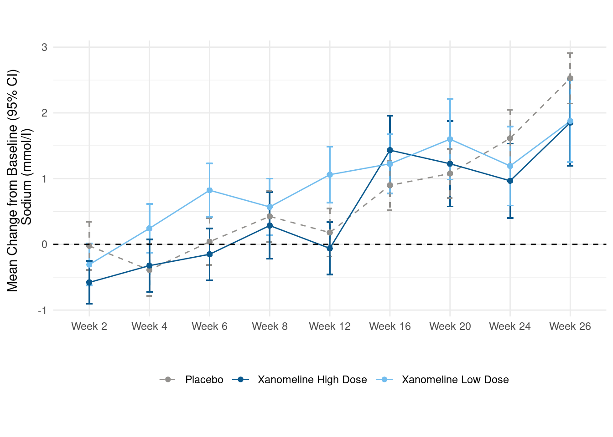
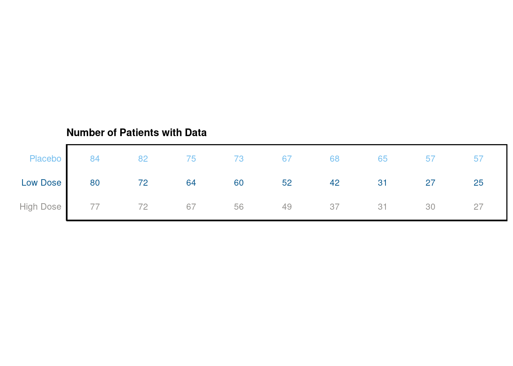

6.2 Safety Plots
Again, we refer to the FDA safety guide which you can find in the scatterplot section. The falcon package aims to cover all tables and plots eventually. However, similar visualisation might be of interest also outside of this package. This is why we provide some code here to show how to combine a plot and a table using the patchwork package.
### load relevant libraries and data
library(dplyr)
library(haven)
library(patchwork)
library(ggplot2)
adam_path <- "https://github.com/phuse-org/TestDataFactory/raw/main/Updated/TDF_ADaM/"
adsl <- read_xpt(paste0(adam_path, "adsl.xpt"))
adlb <- read_xpt(paste0(adam_path, "adlbc.xpt"))
# prepare lab data set for plotting
data <- adlb %>%
filter(PARAMCD == "SODIUM" & !is.na(AVISIT)) %>%
select(USUBJID, TRTA, AVISIT, PARAM, AVAL, BASE, CHG) %>%
mutate(AVISIT = factor(AVISIT, levels = c("Baseline", "Week 2", "Week 4", "Week 6", "Week 8", "Week 12",
"Week 16", "Week 20", "Week 24", "Week 26", "End of Treatment")))| USUBJID | TRTA | AVISIT | PARAM | AVAL | BASE | CHG |
|---|---|---|---|---|---|---|
| 01-701-1015 | Placebo | Baseline | Sodium (mmol/L) | 140 | 140 | NA |
| 01-701-1015 | Placebo | Week 2 | Sodium (mmol/L) | 142 | 140 | 2 |
| 01-701-1015 | Placebo | Week 4 | Sodium (mmol/L) | 140 | 140 | 0 |
| 01-701-1015 | Placebo | Week 6 | Sodium (mmol/L) | 140 | 140 | 0 |
| 01-701-1015 | Placebo | Week 8 | Sodium (mmol/L) | 141 | 140 | 1 |
# create plot
p <- data %>%
filter(!AVISIT %in% c("Baseline", "End of Treatment") & !is.na(AVISIT)) %>%
group_by(AVISIT, TRTA) %>%
mutate(mean_chg = mean(CHG, na.rm = TRUE),
se_chg = sd(CHG, na.rm = TRUE) / sqrt(length(CHG))) %>%
ungroup() %>%
ggplot(., aes(x=AVISIT, y=mean_chg, group=TRTA, linetype = TRTA)) +
geom_errorbar(aes(ymin=mean_chg-se_chg, ymax=mean_chg+se_chg, color=TRTA), width=.1) +
geom_line(aes(color=TRTA)) +
geom_point(aes(color=TRTA)) +
geom_hline(yintercept=0, linetype='dashed')+
scale_linetype_manual(values = c("dashed",rep("solid",2))) +
scale_color_manual(values=c("#93918E","#0B5A8F", "#73BDEE")) +
labs(x = "", y = "Mean Change from Baseline (95% CI) \n Sodium (mmol/l)") +
theme_minimal() +
theme(legend.position="bottom",
legend.title=element_blank())
p
# prepare data for table
table_data <- data %>%
filter(!AVISIT %in% c("Baseline", "End of Treatment") & !is.na(AVISIT)) %>%
group_by(AVISIT, TRTA) %>%
mutate(mean_chg = mean(CHG, na.rm = TRUE),
mean_aval = mean(AVAL, na.rm = TRUE),
n_patients = n_distinct(USUBJID),
n_patients = n_distinct(USUBJID),
TRTA = case_when(
TRTA == "Xanomeline High Dose" ~"High Dose",
TRTA == "Xanomeline Low Dose" ~ "Low Dose",
TRUE ~ TRTA)) %>%
ungroup() %>%
select(TRTA, AVISIT, mean_chg, mean_aval, n_patients) %>%
distinct()
data_table1 <- table_data %>%
select(-n_patients) %>%
mutate(value = paste0(round(mean_chg, 2), "/", round(mean_aval, 2)))
data_table2 <- table_data %>%
select(-mean_chg, -mean_aval)| TRTA | AVISIT | mean_chg | mean_aval | value |
|---|---|---|---|---|
| Placebo | Week 2 | -0.0238095 | 140.3690 | -0.02/140.37 |
| Placebo | Week 4 | -0.3902439 | 139.9268 | -0.39/139.93 |
| Placebo | Week 6 | 0.0400000 | 140.3200 | 0.04/140.32 |
| Placebo | Week 8 | 0.4246575 | 140.7260 | 0.42/140.73 |
| Placebo | Week 12 | 0.1791045 | 140.4179 | 0.18/140.42 |
# plot table 1
p_table1 <- ggplot(data = data_table1, aes(x = AVISIT, y = TRTA)) +
scale_shape_manual(values = 1:length(data_table1$TRTA))+
ggpubr::geom_exec(geom_text, data = data_table1, label = data_table1$value, color = "TRTA", size=3) +
theme_classic() +
labs(title = "Mean Change from Baseline / Mean Value", x = "", y = "" ) +
scale_color_manual(values=c("#93918E","#0B5A8F", "#73BDEE")) +
theme(axis.text.y = element_text(colour = c("#93918E","#0B5A8F", "#73BDEE")),
axis.text.x=element_blank(),
axis.ticks.x=element_blank(),
axis.ticks.y=element_blank()) +
theme(legend.position="none",
panel.border = element_rect(colour = "black", fill=NA, size=1),
plot.title = element_text(size=10, face = "bold"))
p_table1 # plot table 2
p_table2 <- ggplot(data = data_table2, aes(x = AVISIT, y = TRTA)) +
scale_shape_manual(values = 1:length(data_table2$TRTA))+
ggpubr::geom_exec(geom_text, data = data_table2, label = data_table2$n_patients, color = "TRTA", size=3) +
theme_classic() +
labs(title = "Number of Patients with Data", x = "", y = "" ) +
scale_color_manual(values=c("#93918E","#0B5A8F", "#73BDEE")) +
theme(axis.text.y = element_text(colour = c("#93918E","#0B5A8F", "#73BDEE")),
axis.text.x=element_blank(),
axis.ticks.x=element_blank(),
axis.ticks.y=element_blank()) +
theme(legend.position="none",
panel.border = element_rect(colour = "black", fill=NA, size=1),
plot.title = element_text(size=10, face = "bold"))
p_table2
# combine plots
final_plot <- p + p_table1 + p_table2
# display plot w/ layout
final_plot + plot_layout(byrow = FALSE,
heights = c(5,1,1))